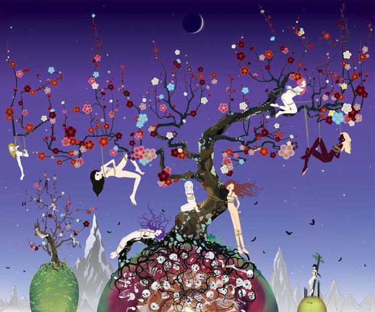

En la intersección entre la nostalgia del trazo manual y la precisión infinita del software, está naciendo una nueva corriente estética: el Surrealismo Híbrido. Ya no se trata de elegir entre el lienzo o la tableta gráfica; los artistas contemporáneos están derribando esa frontera para construir universos que se sienten, a la vez, ancestrales y futuristas.